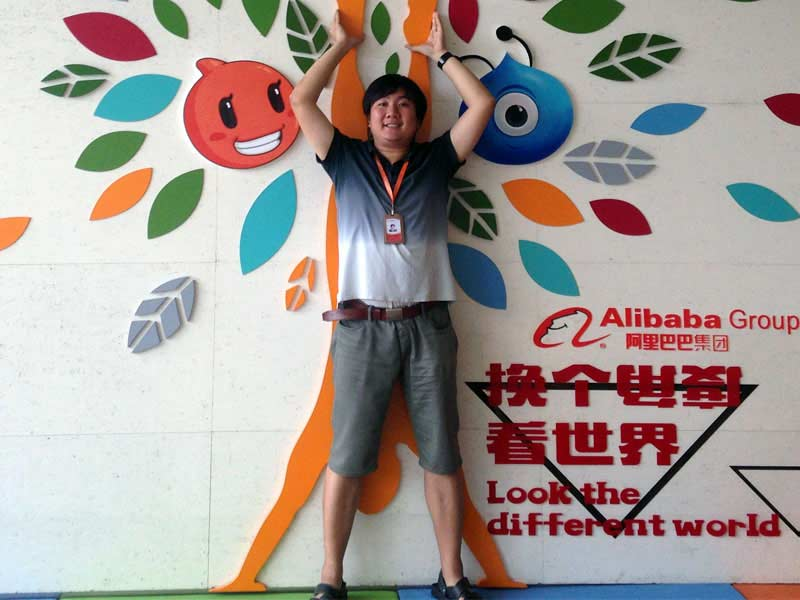
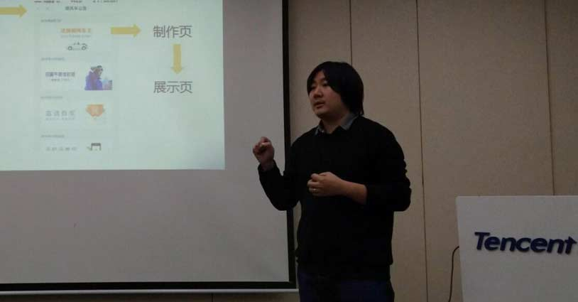

About
About
About Me
Self-Introduce
My name is Zhai Dongfang, born in 1985, now live in Beijing. I’m an interaction designer in DidiChuxing – a company which focus on car sharing via mobile devices and big data.
Before 21 years old, I lived in Zhengzhou, a medium-sized city in Henan Province. I read a lot of Chinese contemporary literature works during my high school life, thus literature and reading have become my favourite hobby since then. After graduation from high school, I entered Zhengzhou University of Light Industry to study software engineering.

As a graduate from there, I applied a certification assistant job in CCIC Corporation Henan Department, then worked in Zhengzhou for 2 years until 2008. I went to Beijing independently at the time for the reason of Olympic. It seems like a challenge, and very soon a exhibition company hired me because of that my writing skill and the experience of web design were what they needed. I became a web editor then, my responsibilities were to edit articles online and design promotion webpages for their vertical portal website which served for the exhibition industry. After 1 year later, I had already taken the position of project manager there. However, I jumped once again. With the experience of web design and content management, I went to another company which had a big plan to create a social network platform. It was so called Web 2.0 mode, I played my role as a still web designer there for 1 year. In 2011, I started my interaction designer life in Tencent. In next 4 years, I used to design many features of different products. For example, Tencent Weibo (http://t.qq.com, twitter-liked microblogging service), Weishi (http://weishi.qq.com, vine-liked short video sharing platform), Tencent News Client (news service in mobile era) etc., including information architecture and functional design. In 2015, DidiChuxing became a phenomenon of internet economic, I received an invitation from that company and continued another career journey.

Those above are about my career. In recent years, there have been dozens of changes in online media industry. The more I know about design, The less I know about content. So I think I should back to media, literature and language themselves and learn more about those fundamentals.
On the other hand, in 2008 – 2013, I finished my self-taught mode study in the major of Chinese Language & Literature which was provided by Beijing Normal University. Finally, I gained my Bachelor of Arts degree through the defense and won the outstanding thesis award. In 2014, I redesigned international official website of PKU. In the following year, I translated two books into Chinese (Stephen A. Thomas' “Data Visualization with JavaScript” and Aaron Gustafson's “Adaptive Web Design”). Both of them are in the publishing process. In addition, I have kept in touch with some influential oversea designers as @Brad_Frost, @LukeW, @Grigs, we track each other on LinkedIn or Instagram and discuss design issues.
Contact me
- LinkedIn:
- https://cn.linkedin.com/in/bennychia
- Github:
- https://github.com/bennychia
- Email:
- bienfantaisie#gmail.com
- Wechat: